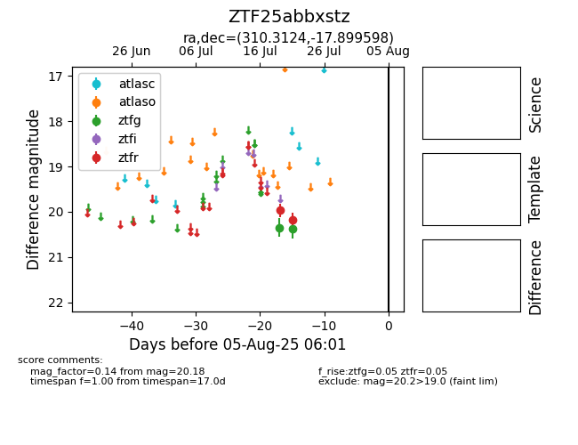

Target ZTF25abbxstz at 2025-08-05 06:01, see:
FINK: fink-portal.org/ZTF25abbxstz
Lasair: lasair-ztf.lsst.ac.uk/objects/ZTF25abbxstz
ALeRCE: alerce.online/object/ZTF25abbxstz
alt names
ZTF25abbxstz (ztf,fink)
coordinates:
equatorial (ra, dec) = (310.3124,-17.89960)
galactic (l, b) = (27.9577,-32.04526)
photometry
last ztfg=20.38, ztfr=20.18
2 ztfg, 2 ztfr detections
